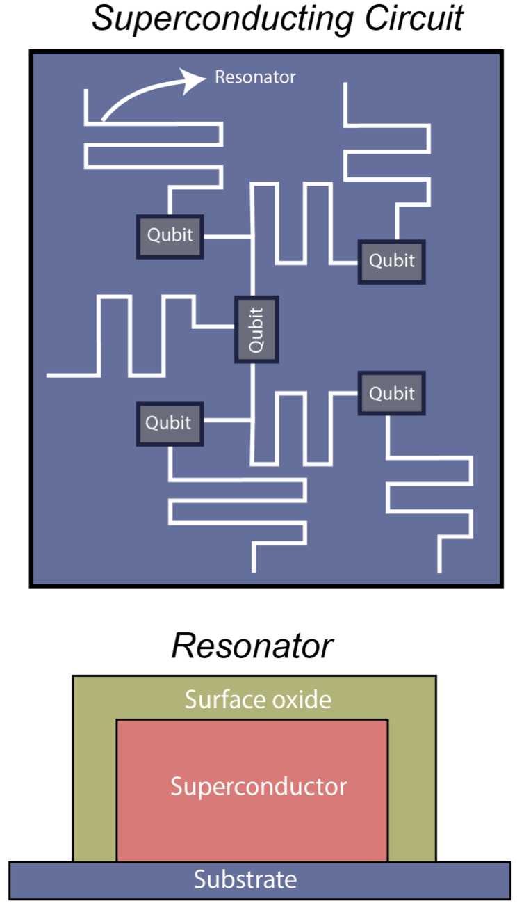
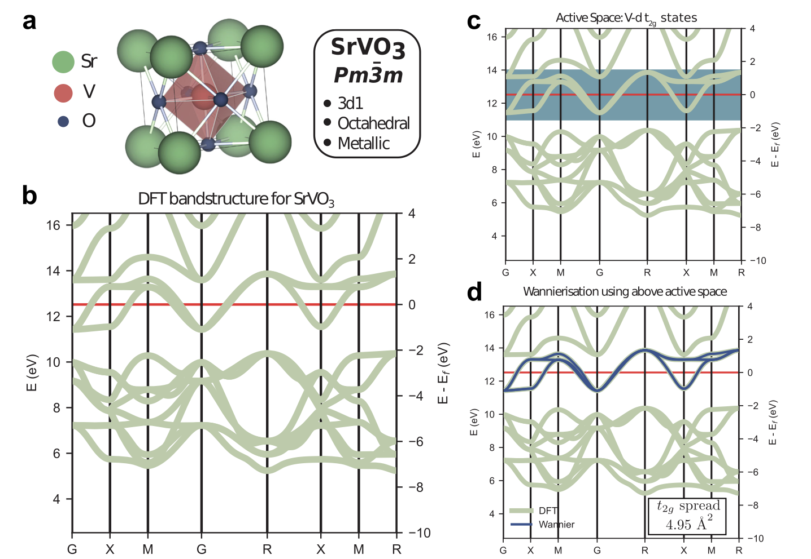
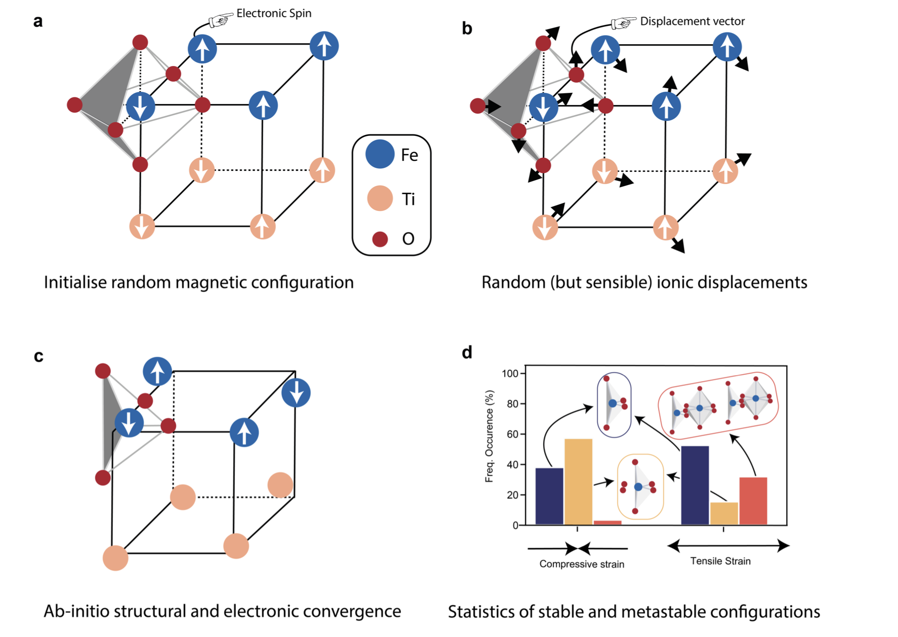
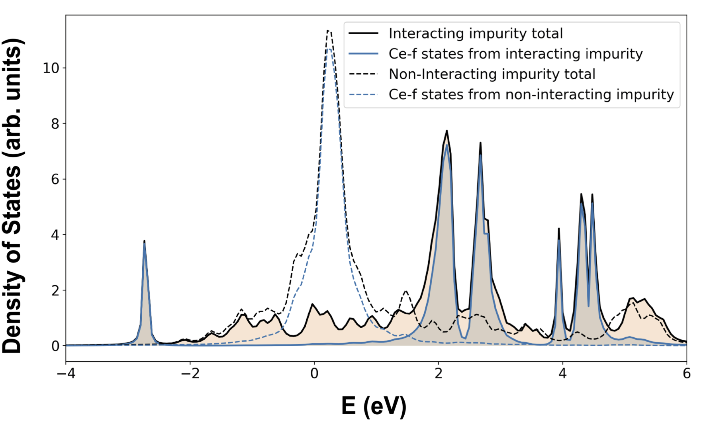
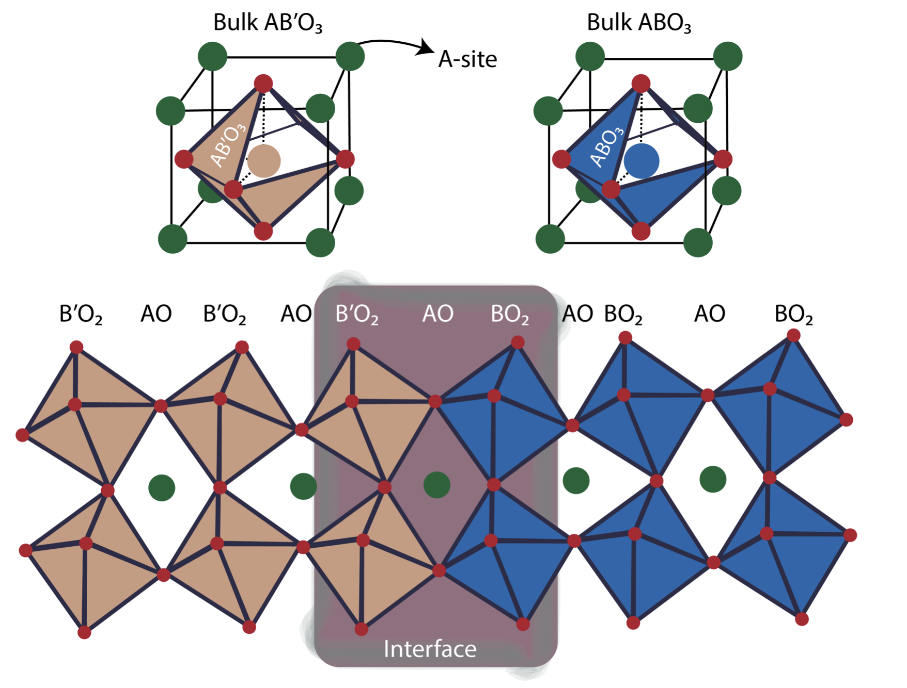

Research Highlights
AI, Machine Learning & Software Infrastructure
Materials simulation and design


Microscopic origin of Magnetic Disorder for superconducting qubits.
[Paper]


Spin-assisted crystal structure prediction.
[Paper]

Quantum Monte Carlo methods for electronic spectral functions.
[Paper]
Quantum Enhanced Materials Modeling.
[Video]

Interface engineering of complex oxides for energy applications.
[Paper]